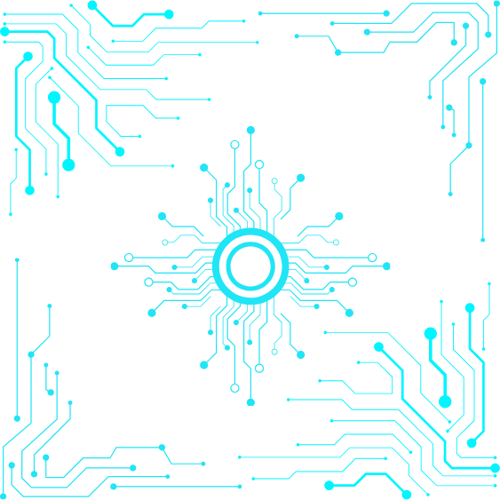
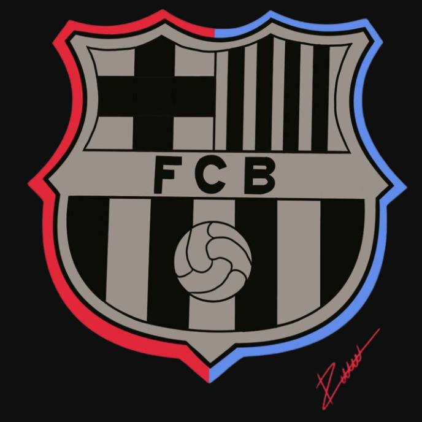
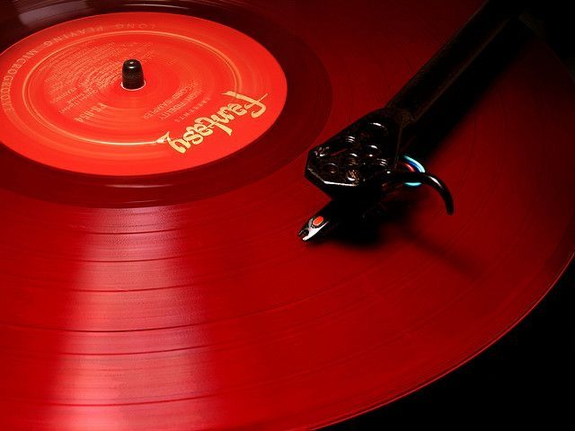

My Love for Technology
The world of computer engineering is not just my career. I thrive on solving problems, writing code, and exploring new technologies. For me, every bug is an opportunity to learn, and every new project is a chance to innovate. I believe in creating solutions that make life easier, smarter, and a little more fun. If you are interested in my journey, download my CV
CVA Need for Speed
Motorsports are my adrenaline rush, and Formula 1 is the ultimate obsession. My love for racing runs deep, especially for Lewis Hamilton, An 8-time world champion. I admire the determination and skill of the driver who push the limits every race -- "Life is about LESSONS, not Perfection", Lewis


The Beautiful Game
Football is more than a sport to me; it’s a lifelong passion. As a die-hard FC Barcelona fan, I’ve been following the team since I could kick a ball. Playing football has been a part of my life since childhood, and it’s where I learned teamwork, perseverance, and the joy of chasing goals (literally and figuratively).
My Passion for Baking
Baking is my creative outlet. From cakes to cookies, I love experimenting with flavors and techniques. It’s a delicious way to unwind and share joy with others. Whether it’s a classic chocolate cake or a new recipe I’m trying, baking is always a sweet adventure.

The Universal Language
Music is my constant companion and the soundtrack to my life. I believe music transcends boundaries and connects people in ways words can’t. As someone once said, “Music is a language that everyone can understand.” Whether I’m coding, baking, or just relaxing, there’s always a playlist for the moment. Curious? Check out my Spotify account.
Spotify